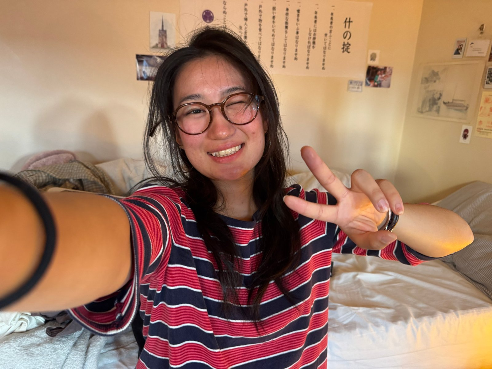
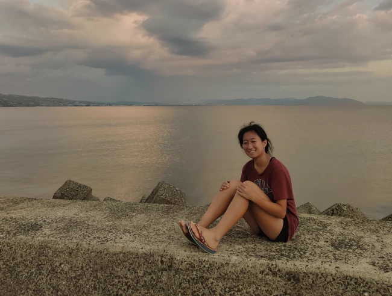
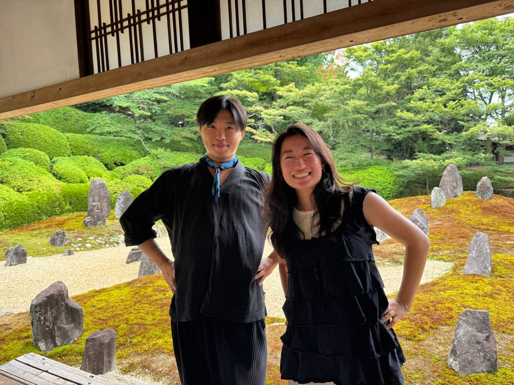
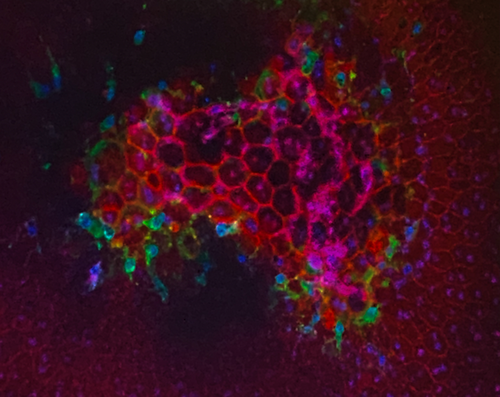
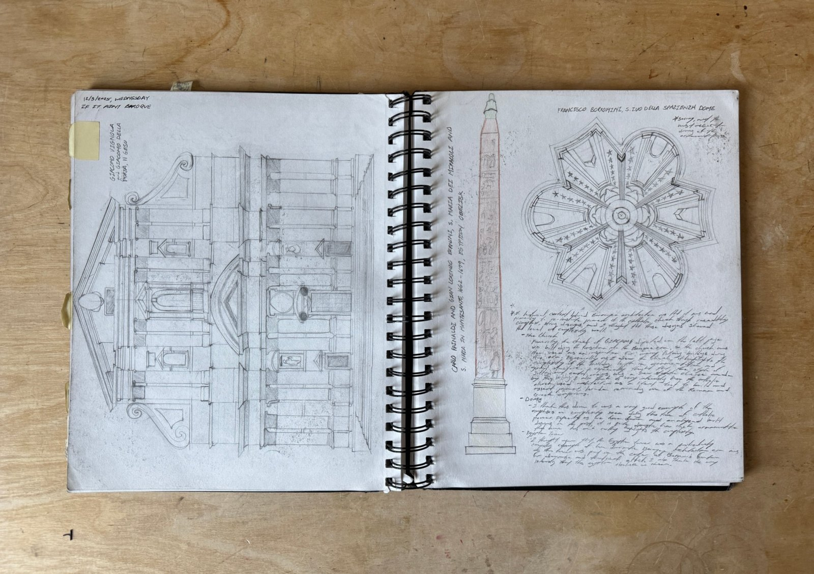
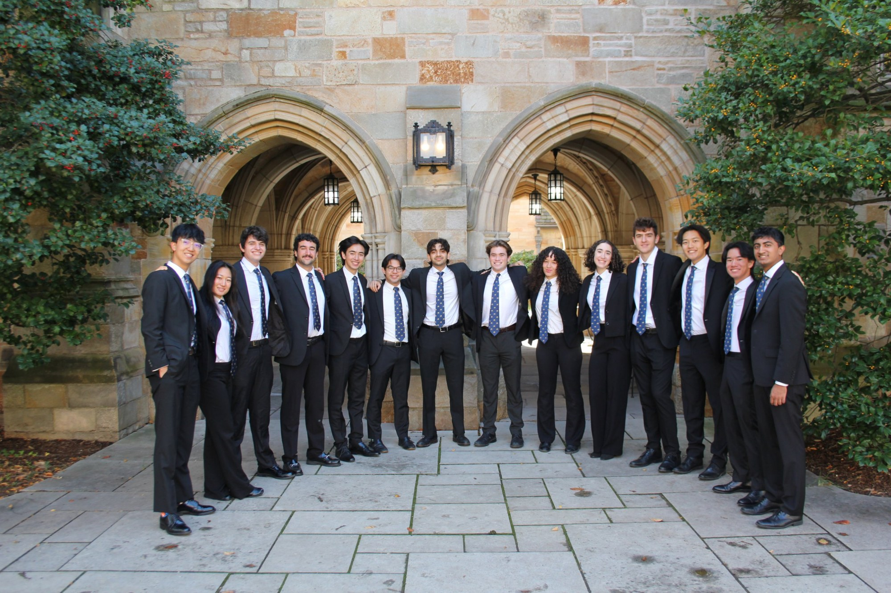

MAI ISHIMURA
Hi there! My name is Mai, I am a sophomore at Yale University studying Architecture, Psychology, Data Science and a little bit of Computer Science!
My research focuses on understanding social cognition through computational models - I try to understand human behavior and motivation through both the individual and societal level, and transform those insights into design!
Mainly though, I just love to stay active, drink matcha, and explore fashion :)
PROJECTS



ABOUT ME
[About me — a few lines on your background, what drives your work, experience and skills.]
[About photo]
CONTACT
© MAI ISHIMURA · 石村眞愛